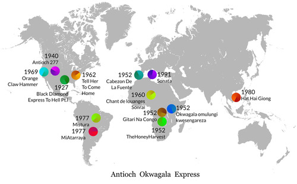

{kind=link}
Antioch Okwagala Espress
Esta canción está compuesta con 19 loops procedentes de 13 canciones diferentes. En este mapa puedes ver de donde procede cada canción y su fecha de grabación.
This song is made with 19 loops from 13 different songs. On this map you can see where each song comes from, and the recording date.

Las 13 canciones usadas están en los siguientes discos:
{kind=link}
Antioch
Antioch 277
1940
I Belong to This Band: Eight-Five Years of Sacred Harp Recordings
buy
listen
video
{kind=link}
Louanges Sonrai
Chant de louanges Sonraï
1960
Rythmes et Chants du Niger, recorded by Charles Duvelle
(Collection Radio-Diffusion Outre-Mer *Ocora, SOR 4)
ghostcapital
{kind=link}
{kind=link}
Tell Her To Come On Home
Little Mack Sun Ra And His Arkestra
19??
tristeshumanistes
{kind=link}

Mistura
Mester Geraldo e Sua Bateria
1977
ghostcapital

Gitari Na Congo
Northern Congo
1952
recorded by Hugh Tracy
bolingo69
{kind=link}
Calabria
Sonata
1991
Folk music of Calabria
italianfolkmusic
{kind=link}
{kind=link}
The Honey Harvest
mbuti pygmies
1952
recorded by Hugh Tracy
mademoisellemontana

Black Diamond
Black Diamond Express To Hell Pt.I
1927
Rev. A.W. Nix
buy
archive.org GoodbyeBabylonDisk6
dust to digital
{kind=link}
Orange Claw Hammer
Captain Beefheart His Magic Band
1969
esamalditarockola
{kind=link}
Hat Hai Giong
Tran Quang Hai and Hoang Mong Thuy
1980
musicatradicionaldelmundo